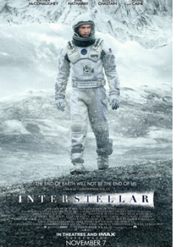

Interestelar



Ficção
drama
As reservas naturais da Terra estão chegando ao fim e um grupo de astronautas recebe a missão de verificar possíveis planetas para receberem a população mundial, possibilitando a continuação da espécie. Cooper é chamado para liderar o grupo e aceita a missão sabendo que pode nunca mais ver os filhos. Ao lado de Brand, Jenkins e Doyle, ele seguirá em busca de um novo lar.
João Vitor Simões
Interestelar é um filme mais ambicioso de Christopher Nolan. espetacular que teve sua estreia em 2014 e contou com a direção de Christopher Nolan e a direção de fotografia de Hoyte Van Hoytema, que juntos dirigiram uma verdadeira obra de arte cinematografica. O filme nos transporta para um futuro inimaginável onde o ser humano esgotou todos os recursos naturais do planeta, e então um grupo de astronautas liderados por Cooper recebe a difícil missão de sair em uma viagem espacial a procura de um novo planeta para que a vida humana possa continuar, para isso, ele conta com a ajuda de Brand, Jenkis e Doyle que nos leva para uma viagem emocionante e cheia de reviravoltas. Todos os personagens tem uma bagagem emocional muito grande, seja ela de amor, ódio, decepção, solidão ou amizade, todos nos transmitem algum sentimento de uma maneira simplesmente excepcional, o robô Tars por sua vez é o personagem responsável por aliviar a tensão da cena com humor. O filme por se passar no futuro tem a possibilidade de representar as consequências do aquecimento global, da poluição do solo, ar e água, a fome, desigualdade e da guerra, a narrativa tem uma mistura de encantamento e suspense. Os efeitos especiais são implacáveis e a trilha sonora impecável. Os buracos negros, naves espaciais, planetas desconhecidos, um robô bem humorado e todos os outros elementos do filme são perfeitamente colocados no seu devido lugar, todas as cenas sao minuciosamente planejadas e isso faz com que o resultado seja perfeito. Porém não devemos esperar uma continuação já que tal obra de arte é o primeiro e último filme da saga.